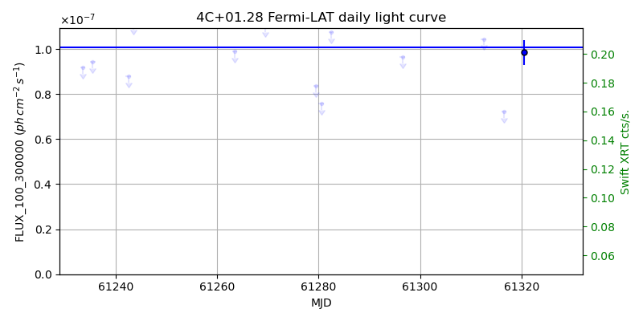
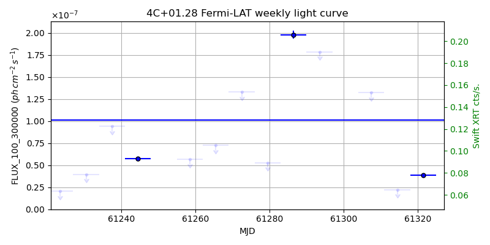
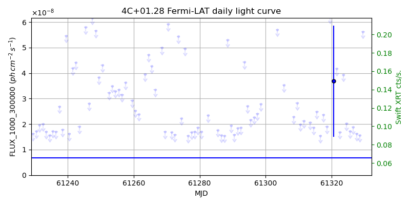
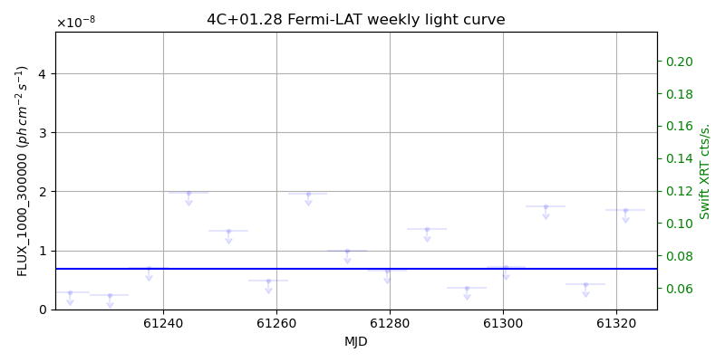

LAT Lightcurve site: https://fermi.gsfc.nasa.gov/ssc/data/access/lat/msl_lc/source/4C_p01d28
Swift site: https://www.swift.psu.edu/monitoring/source.php?source=4C+01.28
NED: Query
Time of last update of this page: UT: 2026-10-17 15:22 (MJD: 61330.641)
| Property | Value |
|---|---|
| R.A. | 10:58:29.52 |
| Dec. | 1:33:57.6 |
| z | 0.894 |
| 3FGL SpectrumType | LogParabola |
| 3FGL PL Index | |
| 3FGL Flux_100_300000 | 1.01e-07 1 / (s cm2) |
| 3FGL Flux_1000_300000 | 6.87e-09 1 / (s cm2) |
| 3FGL Flux >200 GeV | 4.85e-12 1 / (s cm2) |
| 3FGL Extrap. Crab >200 GeV | 0.02 |
| 3FGL Flux After EBL Absorption >200GeV | 1.29e-13 1 / (s cm2) |
| 3FGL EBL Crab Fraction >200GeV | 0.00 |

| MJD | dMJD | Flux | dFlux | Frac3FGL | FracCrab>200GeV | EBLFracCrab>200GeV |
|---|---|---|---|---|---|---|
| 61325.50 | 0.50 | 7.77e-07 | 0.00e+00 | 0.00 | 0.00 | 0.00 |
| 61326.50 | 0.50 | 3.52e-07 | 0.00e+00 | 0.00 | 0.00 | 0.00 |
| 61327.50 | 0.50 | 6.23e-07 | 0.00e+00 | 0.00 | 0.00 | 0.00 |
| 61328.50 | 0.50 | 8.52e-07 | 0.00e+00 | 0.00 | 0.00 | 0.00 |
| 61329.50 | 0.50 | 1.87e-07 | 0.00e+00 | 0.00 | 0.00 | 0.00 |

| MJD | dMJD | Flux | dFlux | Frac3FGL | FracCrab>200GeV | EBLFracCrab>200GeV |
|---|---|---|---|---|---|---|
| 61293.50 | 3.50 | 1.78e-07 | 0.00e+00 | 0.00 | 0.00 | 0.00 |
| 61300.50 | 3.50 | 3.19e-07 | 0.00e+00 | 0.00 | 0.00 | 0.00 |
| 61307.50 | 3.50 | 1.32e-07 | 0.00e+00 | 0.00 | 0.00 | 0.00 |
| 61314.50 | 3.50 | 2.22e-08 | 0.00e+00 | 0.00 | 0.00 | 0.00 |
| 61321.50 | 3.50 | 3.83e-08 | 1.62e-09 | 0.38 | 0.01 | 0.00 |

| MJD | dMJD | Flux | dFlux | Frac3FGL | FracCrab>200GeV | EBLFracCrab>200GeV |
|---|---|---|---|---|---|---|
| 61325.50 | 0.50 | 1.72e-08 | 0.00e+00 | 0.00 | 0.00 | 0.00 |
| 61326.50 | 0.50 | 1.88e-08 | 0.00e+00 | 0.00 | 0.00 | 0.00 |
| 61327.50 | 0.50 | 1.61e-08 | 0.00e+00 | 0.00 | 0.00 | 0.00 |
| 61328.50 | 0.50 | 1.57e-08 | 0.00e+00 | 0.00 | 0.00 | 0.00 |
| 61329.50 | 0.50 | 5.63e-08 | 0.00e+00 | 0.00 | 0.00 | 0.00 |

| MJD | dMJD | Flux | dFlux | Frac3FGL | FracCrab>200GeV | EBLFracCrab>200GeV |
|---|---|---|---|---|---|---|
| 61293.50 | 3.50 | 3.71e-09 | 0.00e+00 | 0.00 | 0.00 | 0.00 |
| 61300.50 | 3.50 | 7.14e-09 | 0.00e+00 | 0.00 | 0.00 | 0.00 |
| 61307.50 | 3.50 | 1.74e-08 | 0.00e+00 | 0.00 | 0.00 | 0.00 |
| 61314.50 | 3.50 | 4.24e-09 | 0.00e+00 | 0.00 | 0.00 | 0.00 |
| 61321.50 | 3.50 | 1.68e-08 | 0.00e+00 | 0.00 | 0.00 | 0.00 |
--------------------------------------------------------- Using user-supplied coords: 10:58:29.52 1:33:57.6 2000 --------------------------------------------------------- FLWO UT night of: 2026-10-18 Local Sid. @ Midnight: 01:23 Sunset (-15.0) (local, UT): 18:56 01:56 Sunrise (-15.0) (local, UT): 05:22 12:22 Moonrise (local, UT): Moonset (local, UT): 22:59 05:59 Moon phase: 0.47 --------------------------------------------------------- AzTime LSID UT Obj_el Obj_az Mn_el Mn_az Sep. --------------------------------------------------------- 18:56 20:18 01:56 -39.5 303.1 30.5 195.3 121.8 19:26 20:48 02:26 -44.6 310.5 28.5 202.5 121.9 19:56 21:18 02:56 -49.2 319.3 25.9 209.3 122.1 20:26 21:48 03:26 -52.9 329.7 22.6 215.6 122.3 20:56 22:19 03:56 -55.5 341.8 18.8 221.3 122.4 21:26 22:49 04:26 -56.8 355.1 14.5 226.6 122.6 21:56 23:19 04:56 -56.6 8.8 9.9 231.4 122.8 22:26 23:49 05:26 -54.9 21.8 5.0 235.7 123.0 22:56 00:19 05:56 -51.9 33.4 0.2 239.8 123.3 23:26 00:49 06:26 -47.9 43.4 -5.5 243.5 123.5 23:56 01:19 06:56 -43.2 51.7 -11.3 247.0 123.8 00:26 01:49 07:26 -37.9 58.8 -17.0 250.4 124.0 00:56 02:19 07:56 -32.3 64.9 -22.8 253.6 124.3 01:26 02:49 08:26 -26.4 70.2 -28.7 256.7 124.6 01:56 03:19 08:56 -20.3 75.0 -34.7 259.8 124.9 02:26 03:49 09:26 -14.0 79.4 -40.7 263.0 125.2 02:56 04:20 09:56 -7.7 83.5 -46.8 266.4 125.5 03:26 04:50 10:26 -0.6 87.5 -52.8 270.1 125.8 03:56 05:20 10:56 5.2 91.5 -58.9 274.3 126.1 04:26 05:50 11:26 11.5 95.5 -64.9 279.6 126.5 04:56 06:20 11:56 17.9 99.6 -70.8 287.0 126.8 05:22 06:46 12:22 23.3 103.5 -75.7 297.1 127.1 --------------------------------------------------------- Dark hours >55 deg.: 0.00